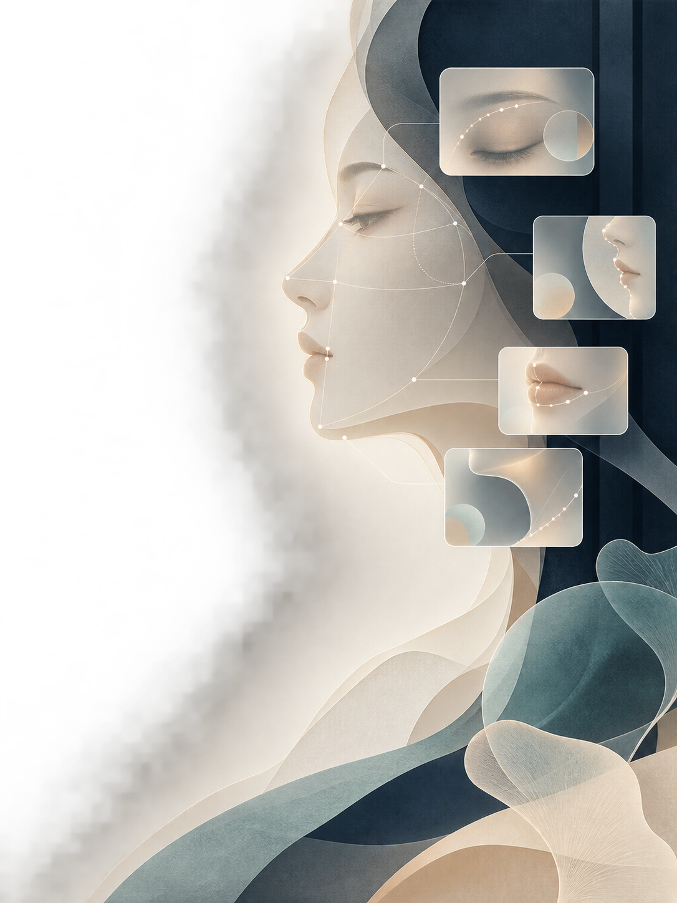

五官协调
观察眉眼、鼻唇之间的相对比例和视觉重量，辅助找到妆容重点。

面部风格分析系统 · 01
上传一张正脸照片，看看你的综合表现、风格标签，以及更适合你的妆容、发型和日常搭配方向。
把“我适合什么”变成一份看得懂、能照着尝试的视觉观察报告。
自然光 · 无遮挡 · 单人正脸 · 一次生成
示例报告 · 02
以下为示例展示，实际结果会根据你上传的照片变化。
实验性照片呈现量表
不是客观颜值排名
系统会把面部比例、线条感和整体平衡，整理成更容易理解的风格方向。
分析内容 · 03
不只看一个分数，也不把拍照条件直接当成你的固定特征。
观察眉眼、鼻唇之间的相对比例和视觉重量，辅助找到妆容重点。
观察面部纵横关系与线条感，辅助判断发型的修饰方向。
把曝光、对比和清晰度单独说明，不把照片状态误当成颜值。
结合面部朝向和画面状态，告诉你这次结果的参考度。
提取面部关键点
计算相对比例
得到风格倾向
生成妆发建议
风格标签 · 04
系统会输出“主风格 × 次风格”的模糊标签，帮你找到更适合尝试的方向。
这组标签意味着：利落感和松弛感可以同时存在，妆发与穿搭不需要只走一种路线。
标签会继续转译成：
低饱和、单点强调
轻盈层次、保留弧度
同色系、材质有层次
个性化建议 · 05
建议会根据本次照片的分析结果生成，不是通用模板。
从眉形、眼妆、腮红和唇色里找到一个视觉中心，避免每个区域都抢重点。
根据面部纵横关系，给出侧分、层次、蓬松度和脸周线条的尝试方向。
从低饱和、柔和浅色、明确主色或同色系层次中，选择一条适合你的搭配路径。
你会拿到什么 · 06
了解这张照片当前的整体呈现。
把抽象气质变成更容易理解的方向。
五官、轮廓、光影和上镜表现。
给出今天就能尝试的第一步。
本站服务器上的离线模型完成分析，原图仅用于本次处理，不做持久化保存；照片曝光、清晰度与角度会单独说明。
上传一张自然光、无遮挡、单人正脸照片，开始生成你的面部风格报告。
上传照片 · 开始分析